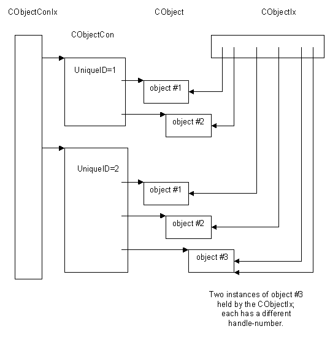

|
| |
An object index is used to generate handle-numbers for reference counting objects.
An object index is an instance of a CObjectIx class.
An object index acts as a collector of reference counting objects but, unlike an object container, it does not act as a container for them. The difference is emphasised by the fact that removing a reference counting object from its object container causes that reference counting object to be destroyed, while removing it from an object index causes it to be closed.
An object index can hold reference counting objects which belong to different object containers. The same reference counting object can also be added to an object index any number of times; each is regarded as a different instance of that object and each instance generates a different handle-number.
CObjectIx::AddL() adds a reference counting object to an object index, and is the way in which a unique handle-number can be generated for that object. A handle-number is the way in which an object which is owned or managed by another thread or process can be identified. For example, on the Kernel side, the object representing a thread (a DThread) maintains an object index for all objects which are open in that thread. Semaphores, mutexes and other threads are examples. Typically, user code running in that thread will have handles, RHandleBase derived types, open on those objects.
The following drawing shows the idea.

An object index is implemented as an array where each element of the array contains a pointer to the reference counting object. An object index can index up to 32,768 (0x8000) reference counting objects.
See also:
Copyright ©2002 Symbian Ltd. 6.1-00174 |
|